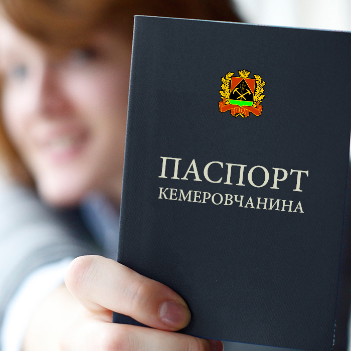

В 2018 году, если всё будет хорошо, кемеровчане и остальные кузбассовцы будут отмечать 100-летний юбилей города на Томи. У Кемерова с датами рождения всё сложно, есть дата образования города, есть дата переименования его. Но самый близкий 100-летний юбилей будет через 3 года.
Неплохо было бы сделать это праздник запоминающимся, а желательно оставить ещё кое-какие артефакты для потомков, отличные от фотографий на сотовый стреляных салютов.
А ещё неплохо было бы познакомить кемеровчан и гостей столицы Кузбасса с историей нашего города, благо она у нас есть. Желательно бы также как-то геймифицировать этот процесс, чтобы привлечь к нему не только любителей и профессионалов Красной Горки, но и простую молодёжь из ВКонтакта.
Думаю, что большинство этих вопросов можно было бы решить с помощью Паспорта Кемеровчанина.
Описание
Паспорт Кемеровчанина представляет из книжку из 24 страниц, размером со стандартный российский паспорт, скреплённую скрепкой, с обложкой из бумвинила угольного цвета.
Каждая страница Паспорта Кемеровчанина содержит короткую информацию о достопримечательности Кемерова (1-2 предложения) с контурным рисунком, выполненным в одну краску. Для достопримечательностей не указываются адрес и контактные данные. Предполагается, что кемеровчанин должен знать, где они находятся. Это могут быть такие места как администрация Лесной Поляны, старый ж.д. вокзал, или место стоянки самолёта «Антошка» в одноименном парке. Список достопримечательностей формируется желанием познакомить кемеровчан с историей родного города.
Геймификация
Геймификация проекта заключается в необходимости проставить все визы достопримечательностей, для того, чтобы считаться полноценным кемеровчанином. Визы, разумеется, ставятся по месту расположения достопримечательности. После простановки всех виз Кемеровчанину проставляется Виза Прописки в Кемерове. Хорошо бы, если это делали в настоящей администрации города. В зависимости от бюджета, возможна выдача памятного значка.
Финансовый вопрос
Идея будет ничтожна без качественной реализации, которая невозможна без должного финансирования. Ситуация осложняется, тем, что проект точно будет загублен, если в нём будет присутствовать какая-то реклама.
Если не будет найден генеральный спонсор проекта, пожелавший остаться анонимным (это важно), выход следующий. Коммерческим предприятиям города будет предложено выкупить изготовленные паспорта кемеровчан по цене превышающей стоимость изготовления и дизайна Паспорта Кемеровчанина. В обмен на это коммерческое предприятие имеет право поставить свой специальный штамп на странице «паспорт выдан…». Оставшиеся деньги можно потратить на изготовление, к примеру, значков, или на другие проекты, посвящённые празднованию.
Паспорт станет хорошим подарком и гостям нашего города. Ограниченный тираж оргкомитет может заполнить визами самостоятельно и продавать по баснословным ценам, на манер почтовых марок, погашенных в космосе. Такой сувенир, думается, станет хорошим подарком членам официальных делегаций.